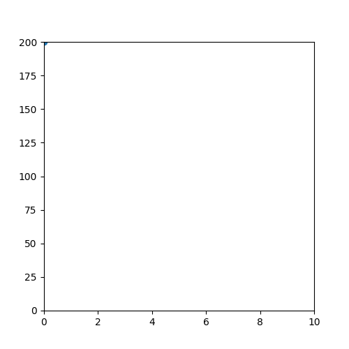

2.6. Projectiles#
Attention
You should create a new new notebook file for this section.
Python is especially useful for modelling physical systems. We’ll illustrate this with a simple example from mechanics: the motion of an object under gravity.

Fig. 2.2 A projectile fired horizontally from a cannon.#
A projectile fired horizontally at a speed \(v_0 = 5~\mathrm{m/s}\) from an initial height \(y_0 = 200~\mathrm{m}\) follows a trajectory given by the following equations:
We will write a program which simulates the trajectory of the projectile. That is, we would like to calulate the \(x\), \(y\) position of the projectile at a given time \(t\).
Let’s start by calculating and printing the \(x\) position at \(t=3~\mathrm{s}\).
Exercise 2.8
Complete the following code so that it calculates and prints the x and y coordinates of the projectile at time t = 3.
import numpy as np
# set values of constants
v_0 = 5 # initial velocity
y_0 = 200 # initial y position
g = 9.81 # acceleration due to gravity
t = 3
# Calculate x and y
Solution to Exercise 2.8
import numpy as np
# set values of constants
v_0 = 5 # initial velocity
y_0 = 200 # initial y position
g = 9.81 # acceleration due to gravity
# calculate y at time t=3
t = 3
# Calculate x and y
x = v_0 * t
y = y_0 - 0.5 * g * t ** 2
print("x (metres):", x)
print("y (metres):", y)
By changing the value of t and re-running the code we could calculate the position of the projectile at any time we choose.
Exercise 2.9
Estimate the time the projectile reaches the ground by changing t until y is zero (to the nearest metre). Then check your answer by calculating the exact value of \(t\) such that \(y = 0~\mathrm{m}\).
Solution to Exercise 2.9
By trial and error, you should find that at \(t = 6.4~\mathrm{s}\) the absoluate value of \(y\) is less than \(1~\mathrm{m}\).
import numpy as np
# set values of constants
v_0 = 5 # initial velocity
y_0 = 200 # initial y position
g = 9.81 # acceleration due to gravity
# calculate y at time t=3
t = 6.4
# Calculate x and y
x = v_0 * t
y = y_0 - 0.5 * g * t ** 2
print("x (metres):", x)
print("y (metres):", y)
Inverting the relationship \(0 = 200 - \frac{1}{2}gt^2\) we find that \(t = \sqrt{400/9.81}~\mathrm{s}\approx 6.39~\mathrm{s}\).
Next we’d like to plot the projectile trajectory on a graph, which will require calculating x and y for a whole sequence of values of t. To do that, we will use an array.
Exercise 2.10
Complete the following code to calculate and print arrays x and y representing the \(x\) and \(y\) positions of the projectile between \(t=0~\mathrm{s}\) and \(t=12~\mathrm{s}\).
import numpy as np
# set values of constants
v_0 = 5 # initial velocity
y_0 = 200 # initial y position
g = 9.81 # acceleration due to gravity
# create an array t containing 10 values between 0 and 12
t = np.linspace(0, 12, 10)
print("t (seconds):", t)
# calculate and print arrays x and y
Solution to Exercise 2.10
import numpy as np
# set values of constants
v_0 = 5 # initial velocity
y_0 = 200 # initial y position
g = 9.81 # acceleration due to gravity
# create an array t containing 10 values between 0 and 12
t = np.linspace(0, 12, 10)
x = v_0 * t
y = y_0 - 0.5 * g * t ** 2
print("t (seconds):", t)
print("x (metres):", x)
print("y (metres):", y)
Arrays
The code np.linspace(a, b, n) creates an array of n evenly spaced numbers from a to b.
t = np.linspace(0, .9, 10)
print(t)
[0. 0.1 0.2 0.3 0.4 0.5 0.6 0.7 0.8 0.9]
Finally, let’s use matplotlib to plot the x-y trajectory of the projectile on a line graph.
Exercise 2.11
Complete the following code to plot the x- and y-coordinates of the projectile. Include a suitable title and x- and y-axis labels.
import matplotlib.pyplot as plt
plt.figure(figsize=(5,5))
Solution to Exercise 2.11
import matplotlib.pyplot as plt
plt.figure(figsize=(5,5))
plt.plot(x, y)
plt.title("Trajectory of projectile")
plt.xlabel("x (m)")
plt.xlabel("y (m)")
First, we imported another package matplotlib.pyplot which contains useful plotting functions. We then created a 5 by 5 figure and finally plotted x and y on the x- and y-axes respectively.
Exercise 2.12
Plot two more graphs: x against t and y against t. Make sure each is on a separate set of axes!
Solution to Exercise 2.12
import matplotlib.pyplot as plt
plt.figure(figsize=(5,5))
plt.plot(x, y)
plt.title("Trajectory of projectile")
plt.xlabel("x (m)")
plt.xlabel("y (m)")
plt.figure(figsize=(5,5))
plt.plot(t, x)
plt.title("Trajectory of projectile")
plt.xlabel("t (s)")
plt.xlabel("x (m)")
plt.figure(figsize=(5,5))
plt.plot(t, y)
plt.title("Trajectory of projectile")
plt.xlabel("t (s)")
plt.xlabel("y (m)")
2.6.1. Animation (Optional but Fun)#
Our last step is to generate an animation of the projectile trajectory. The code to achieve this is shown below, but we won’t study it in detail.
from matplotlib import animation
from IPython.display import HTML, display
import random
filename = "animation.gif"
# Number of animation frames equals the length of time array t
frames = len(t)
interval = 100
def ganimate(frame):
plt.cla()
plt.scatter(t[frame], y[frame])
plt.xlim(0, 10)
plt.ylim(0, 200)
fig = plt.figure(figsize=(5, 5))
anim = animation.FuncAnimation(fig, ganimate, frames=frames, interval=interval)
anim.save(filename, writer='imagemagick')
plt.close()
__counter__ = str(random.randint(0,2e9))
display(HTML('<img src="' + filename + '?' + __counter__ + '">'))

The key line is plt.scatter(t[frame], y[frame]) which plots points from the arrays t and y.
The lines plt.xlim(0, 10) and plt.ylim(0, 200) specify the limits of the x- and y-axes respectively.
Copy this code and change it so that it plots the \(x, y\) position of the projectile (you will also need to change the x-axis limits).
2.6.2. Virtual Orrery (Optional)#
An orrery is a mechanical device which simulates the motions of heavenly bodies in the Solar System. Your goal is to construct a virtual orrery using Python, a little like the one here. This task is open-ended, and you are unlikely to complete the whole Solar System; just see how far you can get!
Assuming (incorrectly!) that planets follow circular orbits, we can use the following equations to simulation their motion:
where \(t\) is time in (Earth) days, \(d\) is orbital diameter and \(p\) is the orbital period in (Earth) days. Values of these parameters can be found in the following link:
http://www.astronomynotes.com/tables/tablesb.htm
First, simulate the orbit of the Earth around the sun for. Use np.arange to generate an array of 365 days, then calculate x and y arrays using the equations above. You will need to use the numpy functions np.cos, np.sin and constant np.pi. For d and p use the values in the link above. Plot the orbit on a graph, and animate it.
Next, you could add in the orbits of Mercury and Venus. You will need to introduce new variables for the x and y position of these planets, you could call them x_mercury, y_mercury and so on.
Simulating the moon’s orbit is interesting: the orbit of the moon is relative to Earth, so you will have to add its arrays to the Earth’s arrays.